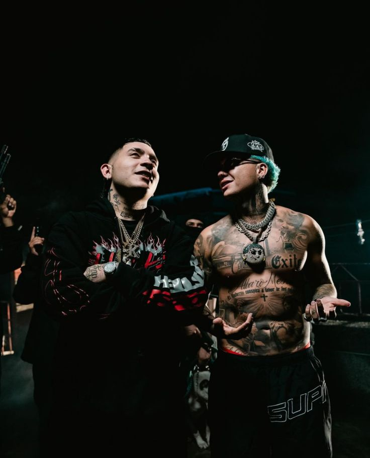

Blessd y Kris R rompen tarimas en gira 2025 Desde Medellín para el mundo Publicado: 20-08-2025 Blessd y Kris r siguen posicionando a Medellín como capital global del reggaetón. Su reciente gira por Europa fue un éxito total, llevando el sabor del barrio a escenarios internacionales. “Somos el barrio ”, dijo Blessd en una entrevista exclusiva.  Canal de YouTube Kris R
Blessd y Young Fatty lanzan tema "Más que amigos" ya disponible Publicado: 15-08-2025 Blessd y Young Fatty se unen en una colaboración explosiva. "Más que amigos" junto con Hades 66 y Blackinny están explotando las calles.